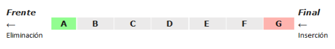
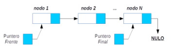
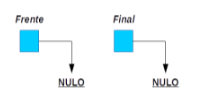

Una cola es un grupo ordenado de elementos del mismo tipo, en la cual dichos elementos se añaden por un extremo (Final) y se quitan por el otro extremo (Frente). Esto significa que los elementos se sacan en el mismo orden en el que fueron insertados o introducidos en la cola, siendo por ello considerada como una estructura de datos FIFO (First In First Out), es decir, que el primer elemento en entrar es el primer elemento en salir.
A modo de ejemplo, una estructura FIFO funciona exactamente igual que una cola en un establecimiento, cuando llegas lo primero que debes hacer es pedir la vez, en ese momento te sitúas detrás del último que llegó, esto es, al final de la cola. A la hora de atender, el dependiente atiende a quién ocupa la primera posición de la cola, y así sucesivamente hasta que te toque a ti.
Otros ejemplos del uso de colas pueden ser una cola para la impresión de documentos, o en un videojuego la animación de varios elementos en movimiento dentro de la pantalla, así se crea una cola para ir animando uno a uno los personajes del juego, de forma que cuando avanzamos alguno una posición se manda otra vez al final de la cola, lo que da la sensación de que se están moviendo todos simultáneamente.
Para manejar una estructura de datos de tipo cola, un programador debe definir un conjunto de operaciones que permitan al usuario acceder y manipular los elementos almacenados en ella. La terminología más común utilizada para referenciar este conjunto de operaciones es la mostrada a continuación:
Una cola, al igual que una pila, no está incorporada en la mayoría de los lenguajes de programación y puede ser implementada de dos formas diferentes:
1. Utilizando una tabla unidimensional (estructura de datos estática).
2. Mediante el uso de punteros (estructura de datos dinámica).
En el caso de la implementación con punteros, se representa por medio de una lista enlazada, y para controlar la inserción o eliminación de elementos utilizamos dos punteros externos denominados Frente (que apunta al primer elemento introducido en la cola) y Final (que apunta al último elemento introducido en la cola).
Cuando la cola se crea, los punteros Frente y Final tienen valor Nulo, ya que inicialmente la cola debe encontrarse vacía.
Conforme vayamos añadiendo elementos a la cola, Frente tomará el valor correspondiente a la dirección del primer elemento de la cola y Final tomará el valor correspondiente a la dirección del último elemento de la cola. De esta manera podemos determinar en todo momento el comienzo y final de la misma.